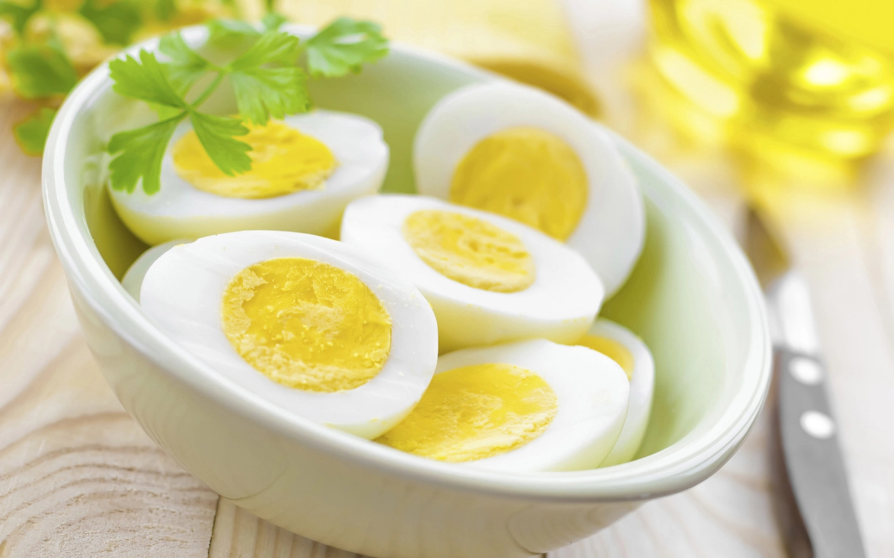

Quantas Gramas de Proteína tem um Ovo

Uma unidade de ovo de galinha tem, aproximadamente, 6g de proteína. O alimento pode ser consumido diariamente, pois traz diversos benefícios para a saúde que vão além do aporte proteico. Rico em vitamina B12, promove a redução dos níveis de gordura e auxilia na formação de músculos.